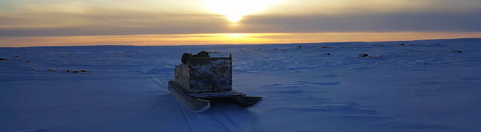

Current projects
A. Monkeys In Space:
Environmental Structure, Ecology and Cognition
As long-lived, slowly reproducing animals, primates face numerous ecological challenges to survival and successful reproduction. As group-living animals, the social world presents an equally diverse array of challenges that require the negotiation of individual needs within the constraints imposed by others. Most research aimed at defining and identifying the nature of primate social cognition has focused on the specific demands of the social world, and pays less attention to how environmental and ecological demands interact with these. Our approach stresses that an animal's actions are structured, supported and constrained by its immediate local circumstances. It generates the broad proposition underpinning our long-term research program - that primate cognition is geared to enabling advantageous responses to current contingencies. That is, they have been selected to exploit, as well as respond to, the unpredictable opportunities offered by both the physical (ecological) and social environments. Our long-term intent has been to bring these two perspectives together by considering how primates solve ecological problems in a social context. Most of our empirical work targets social dynamics and group coordination processes as instances of phenotypically plastic behaviours that have the potential to reveal both the scope and limits of flexible responses to environmental challenge.
Current Funding: NSERC Discovery
grants (LB, SPH), NSERC Canada Research Chairs Program (LB), NRF
Incentive Fund (SPH).
The Thermal
Competence Of Social Endotherms
In addition to these general topic areas, reflected in the projects of various lab members, we began, in 2010, a large collaborative project (Lethbridge, Witwatersrand, UNISA, Western Australia, Wisconsin-Madison) directed at identifying the consequences of obligatory sociality for thermal performance under changing climates. To do so, we have body temperature records at five-minute intervals from known vervet monkeys in parallel with data on activity, social behaviour, physiological stress, spatial location and microclimate. This allows us to chart, not only individual responses to local conditions in both the short and long term, but also the ways in which group use of space reflects a compromise among a range of competing pressures, with differing outcomes for particular individuals. Active data collection ended in 2018 leaving a cumulative sample of approximately 140 monkey-years of temperature data, by far the largest data set of its kind from any endotherm, over a period that has encompassed a complete drought cycle.
Funding: NSERC Discovery grant
(SPH), NSERC CRC Program (LB), NRF Large Competitive Grant
Program awards (SPH, Duncan Mitchell), Ernest Oppenheimer Fund
(Duncan Mitchell), Carnegie Large Research Grant (Andrea
Fuller), Claude Leon Fellowship award and Wisconsin-Madison
internal funds (Richard McFarland).


B. Life History, Fertility And Reproductive Investment
“Life
histories lie at the heart of biology; no other field brings
you closer to the underlying simplicities that unite and
explain the diversity of living things and the complexities of
their life cycles.” Stearns (1992, p. 9)
Life history theory provides a robust evolutionary framework in
which to situate studies of human and non-human primate
reproductive and mortality schedules, in ways that also allow us
to make direct comparisons with other species. In evolutionary
terms, life history is the combination of the probabilities of
survival and fecundity that a species displays in its natural
environment, and is closely tied to the study of demography. In
our work, we apply life history theory to baboons and vervet
monkeys, assessing how females trade-off risks of intrinsic and
extrinsic mortality against levels of investment in offspring.
We also study reproductive decision-making in life history
perspective in contemporary human societies, looking at both
industrialised and developing nations. We are particularly
interested in the process of demographic transition, factors
influencing female fertility in relation to household
composition and social networks, how fertility intentions map
onto reproductive outcomes, and the question of whether
fertility decisions continue to maximise fitness among human
populations.
C. Human ethology: behaviour in natural social settings
How
people respond to, and engage with, their environment under
natural conditions is a way to understand the socially situated
nature of cognition. In our work, we study the way people engage
with the built environment in general, conducting naturalistic
studies of parenting and play behaviours, as well as a current,
more focused study investigating the art gallery as a behaviour
setting, with the objective of understanding and enhancing
people's engagement with art exhibits.
Field Sites

VERVETS
Our vervet research takes place at two locations, both under the
aegis of the Applied Behavioural Ecology and Ecosystems Research
Unit (ABEERU) of the University of South Africa. The first -
Loskop Dam Nature Reserve - is in Mpumalanga Province,
South Africa - and consists primarily of Acacia-Combretum
woodland. The second but primary site - Samara Game Reserve
- is in the Eastern Cape Province and, as befits the karoo, is
known, increasingly, for extremes of climate. Vervets have
penetrated this semi-desert region along riverine Acacia
corridors and, in contrast to the Loskop population, the reduced
possibility of successful fission has resulted in a population
characterised by very large groups living at high density.
Project video (courtesy of Chloé Vilette): https://www.youtube.com/watch?v=MPWnw6M0TKg
BABOONS
Our initial baboon field work took place at the
De Hoop Nature Reserve, in the Western Cape Province of
South Africa (1996-2007). De Hoop lies along the coast in a winter
rainfall belt and was proclaimed to protect its endemic fynbos
plant communities. Its baboons are members of the species'
southern-most population and our initial interest in them stemmed
from their unusual ecology. We no longer work at De Hoop but are
busy with analyses of the long-term demographic and social
databases, as well as with the detailed spatial data set amassed
by Dr Parry Clarke. More recently, however, we have habituated two
baboon groups at Samara, folding them into the
thermoregulation research program. Doing so allows us to compare
the performance of two very differently sized social primates
under the same climatic conditions.

Chacma baboons, particularly, are able to occupy a broad range of
habitat types - often extreme - and our longer-term
cross-population objective has been to understand how they manage
to do so and with what social sequelae. To this end, we are now
also working on baboons at the Telperion Nature Reserve
in Gauteng Province, South Africa.

HUMAN FERTILITY AND REPRODUCTIVE DECISIONS
We are currently working in Western Independent Samoa and
Nunavut, Canada. Located in the middle of the South Pacific Ocean,
halfway between Hawai'i and New Zealand, Samoa is a natural
fertility population in the process of transitioning to
developed-nation status. Unlike most developed countries, Samoa
still has a stable and relatively high fertility rate. Nunavit is
a Canadian territory that comprises most of the Canadian arctic
archipelago. Taking a multidisciplinary approach, we are
investigating the variables that affect fertility. Topics include
alloparental care by children and others, perceptions of 'help',
'work', and 'play', female fertility intentions, social networks
and attitudes toward birth control, adoption and the desire for
children.
Samoa

Nunavut (Photo: Nicole Ymana)